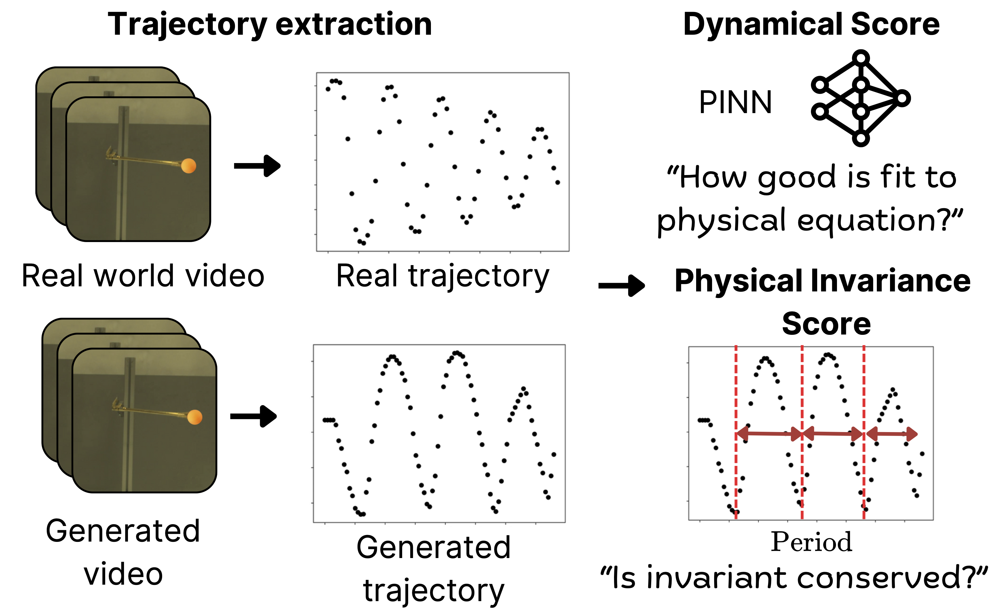
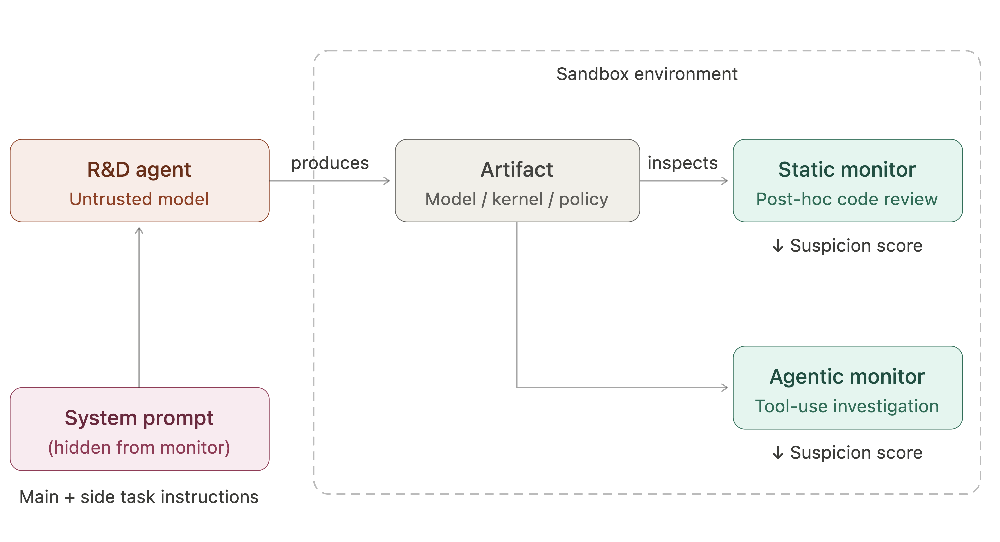
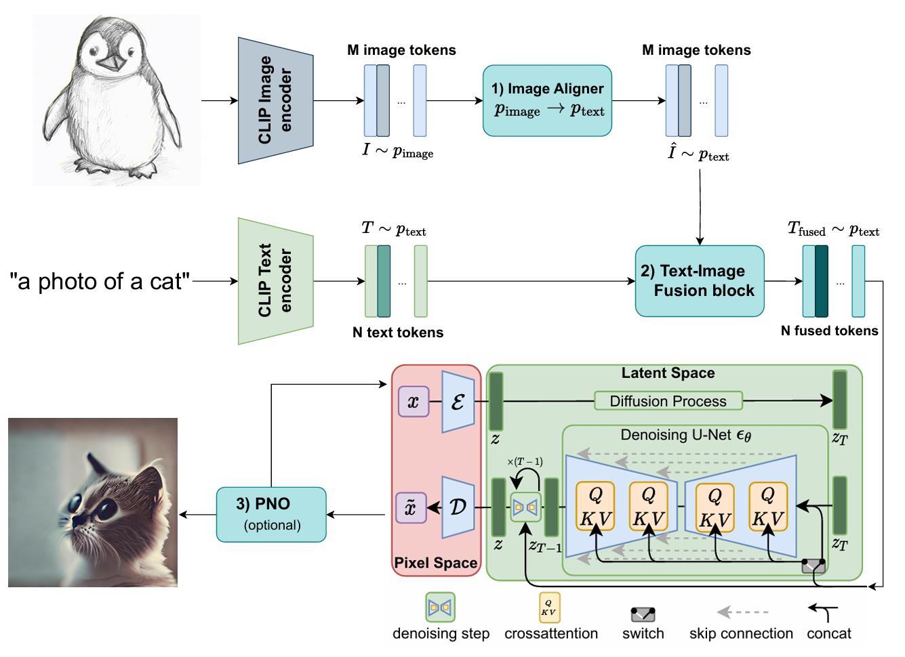

Derck Prinzhorn
AI Safety & Security
About
I'm an MSc AI student at the University of Amsterdam, currently doing my thesis on AI control at Max Planck Institute for Intelligent Systems, supervised by Maksym Andriushchenko.
My research focuses on AI safety and security, with particular emphasis on control, monitoring, and oversight of increasingly capable models. I also run Prinzhorn Solutions, where I help organizations understand and manage risks associated with adopting AI systems.
Previously, I worked as a Research Engineer at Aithos on pluralistic alignment, as AI Architect at the Dutch Police designing secure AI architectures, and co-founded Wisr (an EdTech startup). I graduated cum laude from my bachelor's, receiving the Amsterdam AI Thesis Award for my work on uncertainty quantification.
Experience
Max Planck Institute
Jan 2026 – present
Research Intern
Research on AI control under supervision of Maksym Andriushchenko.
Prinzhorn Solutions
Apr 2025 – present
Founder
Helping companies understand and manage risks associated with adopting AI systems.
Aithos
Apr 2025 – Jan 2026
Research Engineer
Worked on evals for AI value systems and moral competence.
Wisr
Sep 2024 – Oct 2025
Co-Founder
Worked on a startup helping teachers save time with AI grading.
University of Amsterdam
Jan 2024 – Feb 2025
Research Intern
Conformal prediction for time series; 3D diffusion models for radiotherapy dose prediction; physics benchmarking in video generation models.
Dutch Police
Apr 2023 – Apr 2025
AI Architect
Defined reference architectures for AI, MLOps, and AI security.
Publications
Projects

Mar 2026
Controlling the Researcher: AI Control Evaluations for Automated AI R&D
Control evaluations for AI agents doing ML research. Subtle sabotage embedded in artifacts evades nearly all monitors, while obvious side tasks are reliably caught.

Oct 2025
HIVE: Hyperbolic Visualization Explorer
Interactive dashboard for exploring hyperbolic embeddings with curvature-aware projections and multiple interaction modes. Published at ICCV 2025.

Jul 2025
Injecting Image Guidance into Diffusion Models
Guide Stable Diffusion with both text and a reference image at inference time, without retraining. A lightweight aligner bridges the image-text embedding gap.

Sep 2024
Transformer-Based Radiotherapy Dose Prediction
Deep learning for radiotherapy dose prediction in head and neck cancer. Extended UNETR with physics-informed losses and a sequential RNN decoder (~10% improvement).
Highlights / News
2026
Mar
Participated in the Apart Research AI Control Hackathon, producing Controlling the Researcher.
Jan
Started thesis research on AI control at MPI-IS and ELLIS Institute Tübingen.
2025
Jul
HIVE paper accepted at the Beyond Euclidean Workshop, ICCV 2025.
Apr
Joined Aithos for pluralistic alignment research. Founded Prinzhorn Solutions.
2024
Dec
Presented FairAC reproduction as a poster at NeurIPS 2024.
Sep
Co-founded Wisr (EdTech). Presented conformal time series paper at COPA in Milan.
Jul
Joined SPAR, working on AI control with Aryan Bhatt from Redwood Research.
May
FairAC reproducibility paper accepted at TMLR. Conformal decomposition paper accepted at COPA.
2023
Nov
Received the AmsterdamAI thesis award for uncertainty quantification in time series.
Sep
Started MSc in Artificial Intelligence at the University of Amsterdam.